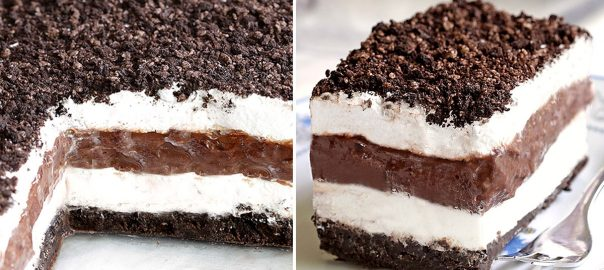

Oreo Lasagna

Description
Do you dream in chocolate?
I picture a table of chocolate desserts waiting for me. It will have all of my favorite treats on it. From Chocolate Cream Pie to Chocolate Bars and Truffles. Tons of Chocolate Cheesecake on the table. The best part of dream is that all of the food there is zero calories. That is how I picture it anyway. 🙂
You have similar dreams ?
Well, when you have a similar dream, daydream or the next time a serious chocolate craving hits, then discover No Bake Chocolate Oreo Lasagna and enjoy a moment that is yours.
Grab your fork and break the delicate oreo topping, the irresistibly smooth chocolate and cream cheese filling starts to melt, gently caressing all your senses and taking you to a place where chocolate dreams come true.
Is this your dream too ? Well, If that’s the case, this is the recipe you’ll want in your back pocket.
Ingredients
- 1 pkg regular oreos
- 6 tbsp butter, melted
- 8 oz cream cheese, softened
- 1 cup confectioners/powdered sugar
- 16 oz cool whip
- 1 5.9 oz pkg chocolate instant pudding
- 2 3/4 cup milk, cold
Steps
- Crush the whole package of cookies either with a food processor, or place them in a large ziplock bag and crush them with a rolling pin. Save about 1 cup to sprinkle on top of dessert lasagna when it's done.
- In a small bowl mix remaining crumbs with melted butter. When the butter is distributed, transfer the mixture to a 9 x 13 inch baking dish, and press the crumbs into the bottom of the pan.
- Using electric mixer, mix half of Cool Whip, softened cream cheese, and confectioners sugar in a large bowl.
- Spread the mixture on top of the oreo crust. Transfer to the refrigerator while you are making a pudding.
- In a bowl, combine chocolate instant pudding with cold milk. Whisk for several minutes until the pudding starts to thicken. Spread the pudding over the previous layer, and let it sit for 10 minutes to firm up the pudding.
- Spread the remaining half of cool whip over the pudding, and sprinkle with reserved Oreo crumbs on top.
- Refrigerate until ready to serve.